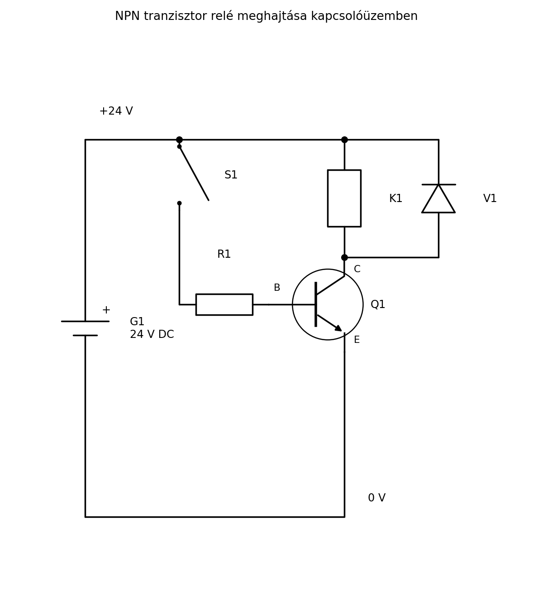
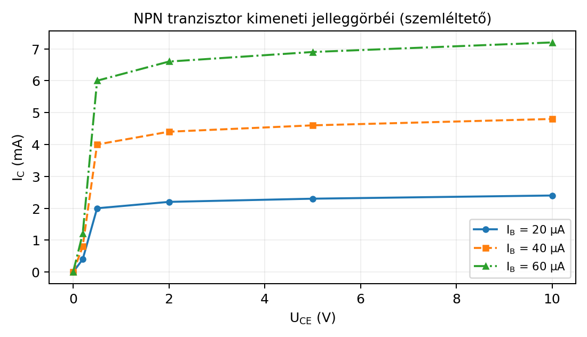

Statikus változat (mint a PDF-ben)
Egy PLC kimenete vagy egy mikrovezérlős vezérlőpanel általában néhány tíz milliampert tud kiadni, miközben a mágneskapcsoló, relé, izzó vagy szelep sokszor ennél lényegesen nagyobb áramot igényel. Ha a szerelő a PLC-kimenetet közvetlenül terheli, a kimenet meghibásodhat. A tranzisztor ezt a problémát úgy oldja meg, hogy kis vezérlőárammal vagy kis vezérlőfeszültséggel nagyobb terhelőáramot kapcsol. A villanyszerelői gyakorlatban tehát a tranzisztort legtöbbször kapcsolóként használjuk, nem hangerősítőként. Ugyanakkor a helyes kapcsolóüzemhez ismerni kell a tranzisztor erősítő jellegét, mert csak akkor tudjuk biztosan kinyitni vagy lezárni.
A legegyszerűbb hasonlat: a bipoláris tranzisztor egy olyan kapcsoló, amelyet bázisárammal vezérelnek, míg a MOSFET egy olyan kapcsoló, amelyet a kapura adott feszültség vezérel. A kapcsolóüzemű tranzisztor lényege, hogy vagy teljesen lezárt, vagy teljesen kinyitott állapotban van. A közbülső, részben vezető állapotban a tranzisztoron jelentős feszültség és áram egyszerre eshet, ami felesleges melegedést okoz.
A következő rajz egy NPN tranzisztorral meghajtott relét mutat. A Q1 tranzisztor szabványos rajzjellel szerepel, de kapcsolóüzemben vezérelt kapcsolóként működik: a teljes fizikai belső felépítésnél itt fontosabb a kapcsolási szerep. A K1 relétekerccsel párhuzamosan kötött V1 dióda a kikapcsoláskor fellépő induktív feszültséglöketet vezeti le.

A rajz működése: ha az S1 kapcsoló bezár, a bázisköri áram folyik Q1 bázis-emitter körén keresztül. Q1 ekkor kinyit (vezet), telítésbe kerül, a kollektor-emitter feszültsége kicsi lesz, és a K1 relétekerccsel soros kör zárul. A relé meghúz, a főáramköri érintkezői pedig kapcsolják a tényleges fogyasztót.
Definíció. A bipoláris tranzisztor (bipolar junction transistor, BJT) háromrétegű, két PN-átmenetet tartalmazó félvezető eszköz. NPN tranzisztor esetén két N-típusú réteg között egy vékony P-típusú bázisréteg van, PNP tranzisztornál a rétegsorrend fordított. A három kivezetés neve: kollektor (C), bázis (B) és emitter (E).
NPN tranzisztorban a kollektoráram a kollektorból az emitter felé folyik, a bázisáram a bázisból az emitter felé folyik. PNP tranzisztorban az áramirányok megfordulnak. A szerelői gyakorlatban a kapcsolások többsége NPN tranzisztort használ, mert azt a pozitív tápfeszültséghez képest a negatív ágban, azaz „lent” egyszerű bekapcsolni.
Összefüggés. A bipoláris tranzisztor nagyjelű, egyenáramú erősítési tényezője:
ahol a kollektoráram, pedig a bázisáram. Egy másik, ritkábban használt tényező:
A két tényező kapcsolata:
Az emitteráram a két áram összege:
Szilíciumtranzisztornál a nyitott bázis-emitter átmeneten közelítőleg:
Ez azért fontos a szerelőnek, mert a bázisköri ellenállás számításakor a vezérlőfeszültségből ezt le kell vonni.
Példa. Ha egy NPN tranzisztor kollektorárama , bázisárama pedig , akkor az erősítési tényező:
Ez azt jelenti, hogy a kollektoráram ebben a munkapontban százszorosa a bázisáramnak.
A gyártási szórással, hőmérséklettel és kollektorárammal változik. Egy adott típusnál a gyártó általában minimum és maximum értéket is megad. A kapcsolóüzemi méretezésnél mindig a legkisebb garantált erősítési tényezőt kell használni, mert azzal a legnagyobb bázisáramot kapjuk, és így a tranzisztor biztosan telítésbe kerül. A pontos értéket a gyártói adatlap tartalmazza (ellenőrizendő: gyártói adatlap).
A tranzisztor három kivezetéséből az egyik a bemeneti és kimeneti kör közös pontja. A gyakorlatban három alapkapcsolást különböztetünk meg:
A munkapont azt az egyenfeszültségű és egyenáramú állapotot jelenti, amely körül a tranzisztor egy erősítőben működik. A munkapontot a munkaponti kollektorárammal és a munkaponti kollektor-emitter feszültséggel adjuk meg. A kapcsolóüzemben viszont a tranzisztort nem ebben a közbülső tartományban akarjuk tartani, hanem csak a záró és a telítési állapot között mozgatjuk.
A kollektorköri ellenállással terhelt közös emitteres fokozat egyenáramú munkapontját a terhelő egyenes írja le. Ha a kollektorkor tápfeszültsége , a kollektor-ellenállás pedig , akkor:
Ebből a kollektoráram:
Ez az egyenlet a rajzon egy egyenest ad. A munkapont ezen az egyenesen helyezkedik el. Kapcsolóüzemben a Q1 lezárt állapotban az egyenes alsó végpontjában, telítésben az egyenes felső, bal oldali tartományában van.
A tranzisztoros relémeghajtásnál a kollektoráramot a terhelés határozza meg. Ha például a relé tekercse 24 V-on 60 mA-t vesz fel, akkor a tranzisztornak ezt a 60 mA-t kell kapcsolnia. Ahhoz, hogy a tranzisztor biztosan telítésbe kerüljön, a bázisáramnak legalább akkorának kell lennie, mint:
A gyakorlatban ennél nagyobb bázisáramot állítunk be, hogy a tranzisztor biztosan telítésbe kerüljön. A túlvezérlési tényezőt -val jelölve:
ahol tipikusan 2–5 közötti érték. A telítési állapotban a kollektor-emitter feszültség kicsi, szilícium-kisteljesítményű tranzisztoroknál jellemzően:
Ez az érték is típusfüggő, ezért a konkrét adatot a gyártói adatlapból kell venni (ellenőrizendő: gyártói adatlap).
Ha a tranzisztor jól telítésbe került, a rajta disszipált teljesítmény:
Ez általában kicsi. Ha viszont a bázisáram kevés, a tranzisztor a részben vezető, aktív tartományban marad, a kollektor-emitter feszültsége nagyobb lesz, és a teljesítményveszteség megnő. Például kollektoráramnál telítési feszültséggel a veszteség:
Ha viszont a tranzisztor aktív tartományban marad, és a kollektor-emitter feszültség lenne, akkor:
Ez egy kisteljesítményű tokozásnál már jelentős melegedést okozhat. Ezért a kapcsolóüzemben a cél a határozott lezárás és a határozott telítés.
Adott:
-
vezérlőfeszültség, például PLC vagy mikrovezérlő kimenete;
- relétekercs:
,
;
- tranzisztor legkisebb erősítési tényezője
;
- nyitott bázis-emitter feszültség
;
- túlvezérlési tényező
.
Keresett: a bázisköri ellenállás értéke.
Számítás:
A biztos telítéshez:
A bázisköri ellenállás:
A legközelebbi E12-es szabványos érték vagy . Szabványos értékkel a kisebb ellenállás nagyobb bázisáramot ad, tehát választása biztonságosabb.
Ellenőrzés: esetén a tényleges bázisáram:
Ezzel a mellett is garantáltan kapcsolható (telítésben tartható) legnagyobb kollektoráram:
Ez nagyobb, mint a relé -es árama, tehát a tranzisztor biztosan telítésbe kerül. A bázisellenállás teljesítménye:
Ez egy hagyományos -os ellenállással bőven megfelel. ∎
Ugyanezt a relét sokszor nem 5 V-os elektronika, hanem 24 V-os vezérlőjel hajtja meg. Ilyenkor a bázisellenállás nagyobb lesz, mert a vezérlőfeszültségből ugyanúgy le kell vonni a bázis-emitter feszültséget.
Adott:
-
;
-
;
- cél:
,
hogy a tranzisztor határozottan telítsen;
-
,
.
Számítás.
Szabványos E12-es érték: (a 37.2.6 szabálya szerint a kisebb érték nagyobb bázisáramot ad, ezért biztonságosabb).
Ellenőrzés: ellenállással:
A mellett kapcsolható kollektoráram:
Ez is bőven elegendő a -es relétekercshez. A bázisellenállás itt egy -os alkatrész lehet, mert a rajta disszipált teljesítmény:
Az NPN tranzisztor kimeneti jelleggörbéje a kollektoráramot mutatja a kollektor-emitter feszültség függvényében, különböző bázisáramok mellett. A görbék bal oldali, meredek szakasza a telítési tartomány, ahol a kollektoráram erősen függ a kollektor-emitter feszültségtől. A jobb oldali, közel vízszintes szakasz az aktív tartomány, ahol a kollektoráram elsősorban a bázisáramtól függ.

Az ábrán látható, hogy minél nagyobb a bázisáram, annál magasabban fut a kimeneti görbe. Az ábra egy kisjelű tranzisztor görbéit mutatja (néhány mA); a -es relémeghajtásnál ugyanez a kép érvényes nagyobb áramléptékben: olyan bázisáramot kell választani, amelynek görbéje a telítési tartományban is eléri a -t. A méretezésnél ezért használjuk a értékét, és adunk túlvezérlést.
Definíció. A MOSFET (metal-oxide-semiconductor field-effect transistor) unipoláris, feszültségvezérelt tranzisztor. Az N-csatornás MOSFET drain (D), gate (G) és source (S) kivezetéssel rendelkezik. A gate és a csatorna között szigetelő oxidréteg van, ezért a kapu egyenfeszültség hatására gyakorlatilag nem vesz fel folyamatos áramot.
N-csatornás MOSFET akkor kezd vezetni, ha a gate-source feszültség meghaladja a küszöbfeszültséget:
(Angol adatlapokon , néven szerepel.)
A küszöbfeszültség típustól függően néhány tized volttól több voltig terjedhet. A szerelői gyakorlatban ezért logikai szintű MOSFET-et kell választani, ha 3,3 V-os vagy 5 V-os mikrovezérlő közvetlenül hajtja. A pontos küszöbfeszültséget a gyártói adatlap tartalmazza (ellenőrizendő: gyártói adatlap).
A MOSFET bekapcsolt állapotában a drain-source ellenállás kicsi, jellemzően néhány tíz milliohm. A vezetési veszteség:
Egy relé vagy mágnesszelep meghajtásánál az N-csatornás MOSFET-et a terhelés alsó, negatív oldalába kötik, a source-ot a negatív tápfeszültségre, a drain-t a terhelés másik végére. A gate-en soros ellenállást és egy kapu-lezáró ellenállást szokás alkalmazni. A gate-soros ellenállás a nagy kapacitív töltőáramot és az esetleges nagyfrekvenciás berezgést csillapítja. A lezáró ellenállás pedig gondoskodik arról, hogy a vezérlőjel hiányában a gate ne lebegjen.
A MOSFET statikus vezérléséhez gyakorlatilag nincs szükség teljesítményt adó kapuáramra, csak a be- és kikapcsolás során kell feltölteni a gate-kapacitást. A szükséges átlagos kaputöltő áram nagyságrendileg:
ahol a gyártó által megadott összes kaputöltés, pedig a kívánt kapcsolási idő. A konkrét értékeket mindig a gyártói adatlap szerint kell ellenőrizni (ellenőrizendő: MOSFET adatlap).
A rajzokon a bipoláris tranzisztort a bázisra merőleges vastag vonallal és a kollektor–emitter közötti vezetési vonallal jelölik, az emitternél nyíl mutatja az áramirányt. A MOSFET jele a gate szigetelését külön jelölt negyedik réteggel mutatja. A bekötésnél a jelképekből viszont nem a tok lábkiosztása derül ki, ezért a tényleges kivezetéseket mindig a tok adatlapjáról kell leolvasni.
Az alábbi ábra a leggyakoribb tranzisztortokokat mutatja. A TO-92 a kisjelű tranzisztorok (pl. relémeghajtás) tokja; a lábakat a lapos oldal felől nézve számozzuk. A SOT-23 felületszerelt tok, nyáklapra forrasztva. A TO-220 közepes teljesítményű tok fém hűtőfüllel és furattal, a TO-247 a nagy teljesítményű MOSFET-ek és IGBT-k tokja. A lábak a rajzon szándékosan csak sorszámot kapnak: ugyanabban a tokban többféle sorrend (B–C–E, E–B–C, G–D–S …) létezik.
Különösen figyelj arra, hogy a TO-220 és a TO-247 fém füle gyakran a középső lábbal (kollektor vagy drain) azonos potenciálon van: ha a hűtőborda más potenciálon van, a tokot szigetelten kell rögzíteni (lásd az Erősáramú félvezetők: tirisztor, triac, IGBT, MOSFET alfejezet hűtőborda-szerelési ábráját). A HTML-kiadásban egy tokra mutatva megjelenik a felhasználási területe.
A relémeghajtó kapcsoláson a tranzisztor kollektora vagy drainje a terhelés alsó ágába kerül, a terhelés másik vége a pozitív tápfeszültségre csatlakozik. A bázisköri ellenállás a vezérlőfeszültség és a tranzisztor közé kerül. A soros vezérlőkapcsoló, nyomógomb vagy PLC-kimenet ezt a bázisköri áramkört kapcsolja.
Továbbvitt eredmény. A tranzisztoros meghajtás, a bázisellenállás méretezése és a telítéses kapcsolóüzem itt bemutatott módszere kell a Hő-, fény- és feszültségfüggő elemek és érzékelők alfejezethez, ahol a hőmérséklet-, fény- vagy feszültségfüggő elemek jelét tranzisztoros fokozattal alakítjuk át relé vagy jelzőlámpa működtetésére.
Egy vezérlőszekrényben a PLC 24 V-os kimenete egy mágneskapcsoló tekercsét akarta vezérelni. A tekercs árama volt, a PLC-kimenet viszont csak -t tudott volna szolgáltatni. A szerelő először egy kis NPN tranzisztoros meghajtópanelt épített be, de a bázisellenállást elhagyta. A PLC-kimenet a bázis-emitter diódán keresztül gyakorlatilag rövidre záródott a 0 V-os (negatív) sínre: a kimenet feszültsége kb. 0,7 V-ra esett, az áramot csak a kimenet belső korlátozása szabta meg, a kimenet túlterhelődött, a tranzisztor is melegedett, és a meghajtás néhány kapcsolás után bizonytalanul működött.
A javítás során a szerelő az adott tranzisztor adatlapjából kikeresett értéket, a tekercsáramból meghatározta a szükséges bázisáramot, és megfelelő bázisellenállást épített be ( és mellett , , a kerekített szabványos érték ; szemléltető (ellenőrizendő: a tranzisztor adatlapja)). A kollektoráramot a mágneskapcsoló tekercsével sorba kötötte, a védődiódát pedig a tekercscsel párhuzamosan úgy, hogy a katód a pozitív tápfeszültség felé essen. A próba után a tranzisztor hideg maradt, a PLC-kimenet terhelése pedig kb. – volt, jóval a -es határ alatt.
Biztonsági korlát. Ipari vezérlőszekrényben a 24 V-os elektronika mellett gyakran 230/400 V-os hálózati feszültségű részek is vannak. Az ilyen munkát csak jogosult személy végezheti, feszültségmentesítés és a munkavégzési szabályok betartása mellett. A tanuló 230/400 V-os hálózaton önállóan ne gyakoroljon.
1. hiba: a bázisellenállás elhagyása.
A PLC vagy mikrovezérlő kimenete 24 V vagy 5 V feszültségű, a nyitott
bázis-emitter átmenet viszont csak kb. 0,7 V-ot enged. Elmaradó
ellenállásnál a vezérlőáramot csak a kimenet belső ellenállása
korlátozza, ami túlterhelést és tönkremenetelt okoz.
2. hiba: a védődióda elhagyása.
A relétekercs induktivitás. Amikor a tranzisztor lezár, a tekercs árama
hirtelen meg akar szűnni, és a tekercsen a tápfeszültségnél jóval
nagyobb feszültség indukálódik. Ez a tranzisztort átütheti. A tekercscel
ellentétes irányú, párhuzamos dióda ezt a feszültséget levezeti.
3. hiba: a tranzisztort a részben vezető tartományban
használják.
Ha a bázisáram túl kicsi, a tranzisztor nem telít, a kollektor-emitter
feszültség nagy marad, és a tranzisztor melegszik. Ilyenkor a
bázisellenállást kisebbre kell választani, vagy a bázisáramot más módon
növelni.
4. hiba: MOSFET-nél a lebegő gate.
Ha a gate nem kap határozott lezáró feszültséget, a szigetelt kapu
feszültsége zajtól, statikus feltöltődéstől változhat, és a MOSFET
véletlenszerűen bekapcsolhat. A gate-re nagy ellenállású, néhány tíz
kilohmos lezáró ellenállást kell tenni a source felé.
1. feladat (A)
Nevezze meg a bipoláris tranzisztor három kivezetését, és írja fel a
kollektoráram, bázisáram és emitteráram közötti áramegyenletet!
2. feladat (A)
Egy tranzisztor bázisárama
,
kollektorárama
.
Mekkora a
erősítési tényező?
3. feladat (B)
Méretezzen bázisellenállást NPN tranzisztoros relémeghajtáshoz!
Adott:
,
,
reléáram
,
,
túlvezérlési tényező
.
Határozza meg a szükséges bázisáramot, az ellenállást, és válasszon
E12-es szabványos értéket! Ellenőrizze a telítést!
4. feladat (B)
A kapcsolási rajzon az NPN tranzisztor kollektora a relétekercs alsó
végére, emittere a negatív tápfeszültségre csatlakozik. A tekercscel
párhuzamos dióda katódja a pozitív tápfeszültséghez kapcsolódik. Mi
történik az S1 vezérlőkapcsoló nyitásakor, és miért védi a dióda a
tranzisztort?
5. feladat (C)
Egy szerelő a relétekercset közvetlenül a PLC 24 V-os kimenetére
kötötte. A PLC-kimenet legfeljebb
-t
bír, a relétekercs árama
.
Mi a hiba? Rajzolja le szavakkal vagy kapcsolási vázlattal a helyes,
tranzisztoros meghajtást!
6. feladat (D)
Egy NPN tranzisztoros relémeghajtásnál a tápfeszültség
,
a relétekercs ellenállása
.
A tranzisztor kollektor-emitter feszültségét megmérve bekapcsolt
vezérlésnél
-ot
kapunk. A relé nem húz meg. Mi lehet a hiba? Milyen ellenőrző mérést
végezne, és mi a várható jó érték?
1. feladat (A)
A három kivezetés: kollektor (C), bázis (B), emitter (E). Az
áramegyenlet:
NPN tranzisztornál a kollektorból az emitter felé, a bázisból az emitter felé folyik.
2. feladat (A)
Adott:
,
.
A
erősítési tényező:
3. feladat (B)
Adott:
-
;
-
;
-
;
-
;
-
.
Keresett: és .
Számítás:
E12-es értékből az választása biztonságos. Ezzel:
Ezzel a mellett is garantáltan kapcsolható (telítésben tartható) legnagyobb kollektoráram:
Ez jelentősen nagyobb, mint a relé -es árama, tehát a tranzisztor telítésbe kerül. ∎
4. feladat (B)
Amikor az S1 vezérlőkapcsoló nyit, a bázisáram megszűnik, ezért a
tranzisztor lezár. A relétekercs áramának hirtelen megszakadását az
induktivitás akadályozná, és a tekercsben a tápfeszültségnél nagyobb
ellenfeszültség indukálódna. Ez a feszültség a tranzisztor
kollektor-emitter irányban átütheti, vagy a kollektorfeszültséget
veszélyes nagyságúra emelheti. A dióda kikapcsoláskor nyitóirányba
kerül, mert a tekercs feszültsége a pozitív tápfeszültséghez képest
ellentétes, és a tekercs árama a diódán át zárt körben folyik tovább,
majd lecseng. Így a kollektorfeszültség legfeljebb a tápfeszültség + a
dióda nyitófeszültsége, kb.
lesz.
5. feladat (C)
A PLC-kimenet nem méretezett
-re,
ezért a közvetlen bekötés túlterheli és tönkreteheti. Helyes megoldás,
ha a PLC-kimenet csak a tranzisztor bázisát vezérli, a relétekercs pedig
a tranzisztor kollektorával sorba kapcsolva a tápfeszültségre kerül. A
báziskörbe megfelelő ellenállást kell méretezni, a relétekerccsel
párhuzamosan pedig védődiódát kell kötni. Áramirányok: a tekercs felső
vége a pozitív tápfeszültségre, az alsó vége a tranzisztor kollektorára,
a tranzisztor emittere a negatív tápfeszültségre, a PLC-kimenet a
bázisellenálláson át a bázisra csatlakozik.
6. feladat (D)
A tápfeszültség
,
a mért kollektor-emitter feszültség
,
ezért a relétekerccsel soros tranzisztor nem telít, hanem az aktív
tartományban van. A hiba leggyakoribb oka a túl kicsi bázisáram, például
rosszul méretezett vagy szakadt bázisellenállás, illetve hiányos
vezérlőjel. Jól telített tranzisztornál a kollektor-emitter
feszültségnek jóval kisebbnek, jellemzően
nagyságrendűnek kellene lennie. Ellenőrző mérésként meg kell mérni a
bázisellenállást, a bázisáramot vagy a bázisoldali vezérlőfeszültséget,
valamint a tranzisztor diódavizsgálatát. A jó mérési eredmény: a
bázis-emitter nyitófeszültség kb.
,
a bekapcsolt tranzisztor kollektor-emitter feszültsége pedig közel
telítési érték.
Számítás. Hibás állapotban a tekercsen esik, így (a névleges ), a tranzisztor teljesítménye – kis tokban jelentős melegedés; a relé a névleges feszültségének csak 67%-át kapja, ezért tipikusan nem húz meg (ellenőrizendő: a relé adatlapja szerinti meghúzási feszültség). Jól telített állapotban , , . A szükséges bázisáram és túlhajtási tényező mellett ; a mért bázisáram ennél jóval kisebb lesz (pl. → , aktív tartomány) – ez egyezik a számított -rel.
A bipoláris tranzisztor áramvezérelt félvezető eszköz: a bázisáram szabályozza a kollektoráramot. A nagyjelű erősítési tényező , az emitteráram pedig . Kapcsolóüzemben a tranzisztort lezárt és telített állapot között működtetjük. Telítéshez a bázisáramnak nagyobbnak kell lennie, mint , ezért túlvezérlést alkalmazunk. A bázisellenállást a vezérlőfeszültség és a nyitott tranzisztor feszültsége közötti különbségből számítjuk úgy, hogy a kívánt bázisáramot megkapjuk.
A MOSFET feszültségvezérelt tranzisztor: a gate-source feszültség haladja meg a küszöbfeszültséget, a statikus kapuáram gyakorlatilag nulla, bekapcsolt állapotban a veszteséget határozza meg. Relémeghajtásnál a terhelést a tranzisztor alsó ágába kötik, és a tekercscel párhuzamos védődiódát kell alkalmazni az induktív feszültséglöket ellen. A tranzisztoros meghajtás alapjait a későbbi érzékelős kapcsolások is használják.